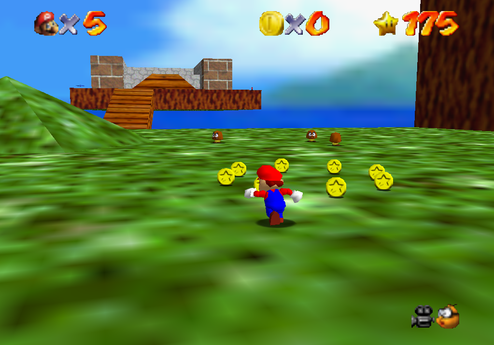

Histoire
Super Mario 64: The Lost Stars est mon premier projet dans le monde du développement de jeux vidéo. Grâce à cette aventure, j'ai découvert les défis de la création d'un jeu de plateforme en 3D et appris à résoudre les problèmes techniques qui en découlent.
L’histoire se déroule après les événements de Super Mario 64. Mario doit retrouver des étoiles de puissance cachées par Bowser, qui cherche à s'emparer du Royaume Champignon.
Pour contrecarrer les plans de Bowser, Mario devra explorer de nouveaux mondes et récupérer les étoiles dissimulées à travers ces niveaux inédits.
Des plaines verdoyantes aux fonds marins, en passant par l’espace, le jeu propose quatre nouveaux mondes et 24 étoiles de puissance à collectionner !